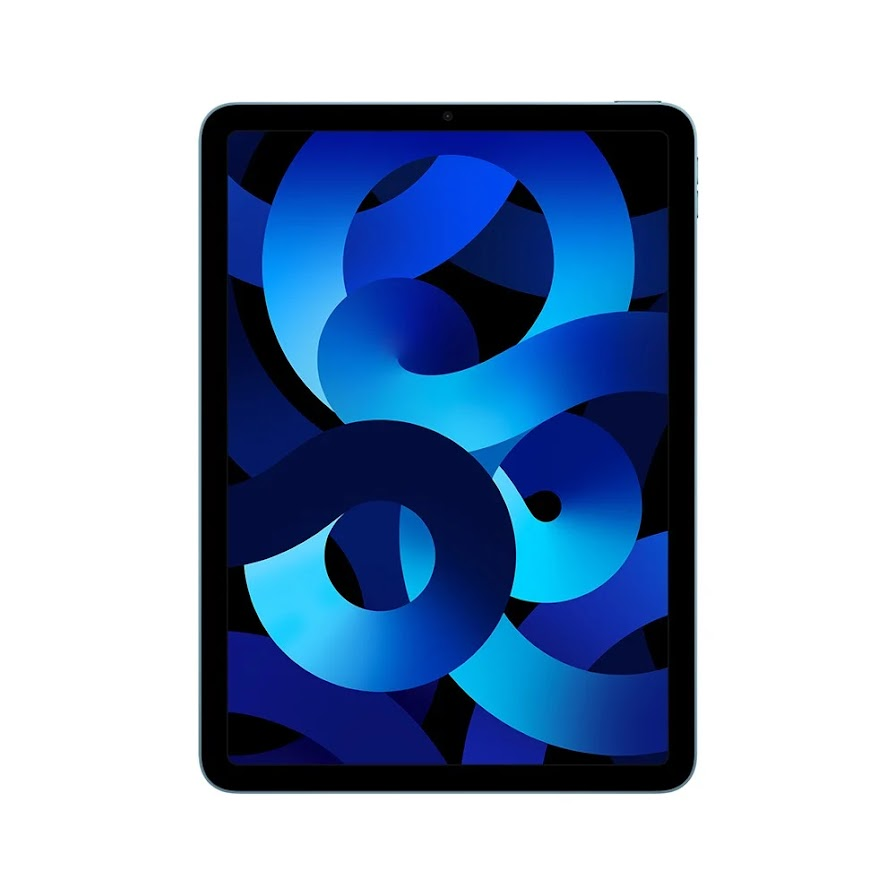
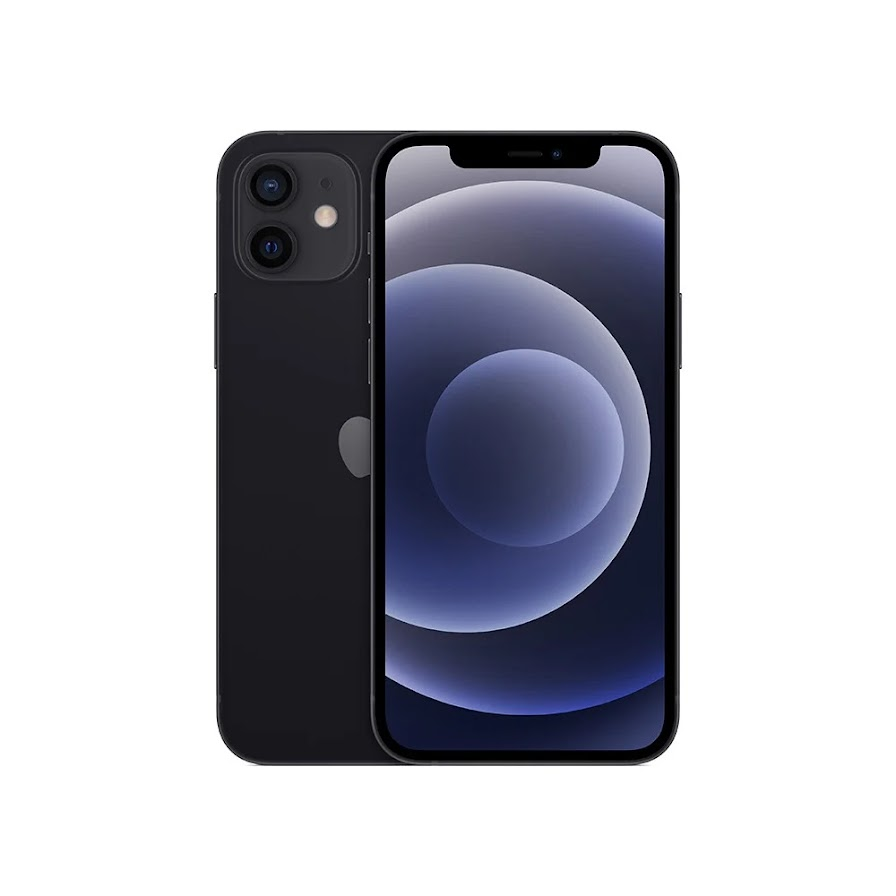
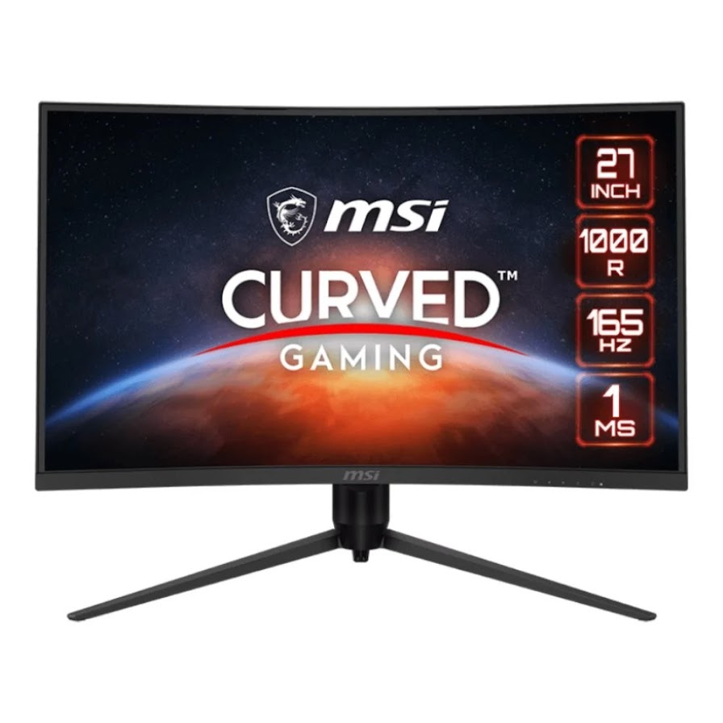

| # | รายการสินค้า | ราคา | หมายเหตุ |
|---|---|---|---|
| 1 |  | 5,000.- | iPad Air (5th Gen) suängnähnšu iPad Air อัพเกรดบีบไปอีกขั้นด้วยจอภาพที่ใหม่และกว้างขึ้น พร้อมชิปประมวลผลที่ทรงประสิทธิภาพ ให้การทำงานหรือเล่นเกมหนัก ๆ ตัดต่อคลิป วาดรูป กลายเป็นเรื่องง่าย ๆ แต่ยังคงความเบาและบางไว้ได้อยู่ พอร์ตการเชื่อมต่อแบบ USB-C ใช้งานได้กับ Apple Pencil (şuri 2) ad Apple M1 พร้อม Neural Engine จamw Liquid Retina uuna 10.9 นิ้ว |
| 2 |  | 23,000.- | เร็วยิ่งกว่าเร็ว กงชิพที่เร็วที่สุดในสมาทโฟนอย่าง A14 Bionicom OLED แบบขอบจรดขอบ Ceramic Shield inบต่อการตกกระแทกได้ดีขึ้น 4 เท่า และโหมดกลางคืนบนกล้องทุกตัว iPhone 12 ก็มีหมดทุกอย่าง จอภาพ Super Retina XDR auna 6.1 นิ้ว Ceramic Shield ซึ่งแข็งแกร่ง กว่ากระจกไหนๆ บนสมาร์ทโฟน 56 เพื่อการดาวน์โหลดที่เร็วสุดแรงและการสตรีมคุณภาพสูง ชิปที่เร็วที่สุดเท่าที่เคยมีมาในสมาร์ทโฟนอย่างชิป A14 Bionic ระบบกล้องคู่สุดล้ำที่ประกอบด้วยกล้องอัลตร้าไว และไว ความละเอียด 12MP กล้องหน้า TrueDepth ความละเอียด 12MP |
| 3 |  | 6,700.- | แสดงภาพชัยชนะของคุณด้วยจอภาพ MSI Optix G271CQR Curved Gaming มาพร้อมกับอัตราการรีเฟรช 2560 x1440, 165Hz, แผง เวลาตอบสนอง 1ms, Optix G271CQR จะทำได้คุณได้เปรียบในการแข่งขันที่คุณต้องการเพื่อกำจัดคู่ต่อสู้ของคุณ หน้าจอโค้ง : 27 นิ้ว ความ ละเอียด 2560x1440@165Hz เวลาตอบสนอง: 1 ms การเชื่อมต่อ: 2x HDMI v2.0b, 1x DisplayPort 1.2a səงรับเทคโนโลยี: AMD FreeSync Premium Technology |